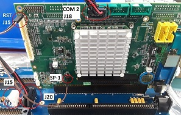
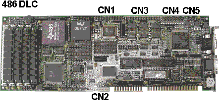
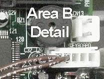
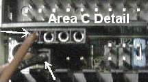
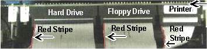

Replacing CPU
This procedure describes how to:
- Remove the CPU PCB.
- Upgrade to an IOWA CPU PCB, 486 DX4-S CPU PCB, and VDX2 CPU PCB.
- Install a CPU PCB.
-
Remove the CPU PCB.
-
Disconnect the CPU PCB.
If removing this CPU PCB: Then complete these steps: VDX2 (short PCB with three green connectors) - Locate and remove these cables from the top edge of the CPU PCB:
- Disconnect the two wire connector to the RST J15 header in the upper left hand corner of CPU PCB.
- Disconnect the single wire connector from the upper pin of SP-1. Unplug the white 4 pin connector from J15 on backplane PCB.
- Disconnect serial COM2 connector to J20 on backplane and other end to left most green header (J18) on CPU board.

IOWA (short PCB with a blue HDD connector) - Locate and remove these cables from the top edge of the CPU PCB:
- Hard drive (HDD IDE)
- Printer
- Serial
- Floppy
- Reset (2- or 4-pin connector with 2 wires)

- Remove the CPU PCB retaining screw, lift the PCB partially out of the card cage, and remove the speaker cable.
486 DX4 S (short PCB) - Locate and remove these cables from the top edge of the CPU PCB:
- Hard drive cable from CN 1
- Floppy drive cable from CN 4
- Parallel port cable from CN 5
- Speaker cable from CN 2 (4-pin connector with 1 wire)
- Reset cable from CN 12 [C] (2-pin connector with 2 wires)
- Keyboard cable from CN 7 [B] (white 5-pin connector with 2 wires)

- Remove the CPU PCB retaining screw, lift the PCB partially out of the card cage, and remove the serial cable from CN 10 connector [A].
486 DX4 100 (long PCB with the CPU near the center) - Locate and remove these cables from the top edge of the CPU PCB:
- Keyboard cable from CN 5 (white 5-pin connector with 2 wires)
- Speaker cable from CN 6 (4-pin connector with 1 wire)
- Reset cable from CN 8 (2-pin connector with 2 wires)
- Hard drive cable from CN 10
- Floppy drive cable from CN 11
- Parallel port cable from CN 12

- Remove the CPU PCB retaining screw, lift the PCB partially out of the card cage, and remove the serial cable from CN 17.
486 DLC (long PCB with the CPU at the top left) - Locate and remove these cables from the top edge of the CPU PCB:
- Floppy drive cable from CN 1.
- Hard drive cable from CN 3.
- Parallel/serial port cable from CN 4/CN 5.

- Remove the CPU PCB retaining screw, lift the PCB partially out of the card cage, and remove the speaker/keyboard/reset connector from CN 2 at the lower edge of the PCB.
- Locate and remove these cables from the top edge of the CPU PCB:
-
Disconnect the CPU PCB.
-
Install the CPU PCB.
-
Connect the CPU PCB.
If installing this CPU PCB: Then complete these steps: VDX2 (short PCB with three green connectors) - Fasten cable C03411 plunger switch to the front of the card cage.
- Connect the two wire connector to the RST J15 header in the upper left hand corner of CPU PCB.
Note: When connecting RST cable to J15, make sure that the brown wire is to the right.
- Connect the single wire connector to the upper pin of SP-1. Plug white 4 pin connector into J15 on backplane PCB.
- Connect serial COM2 connector to J20 on backplane and other end to left most green header (J18) on CPU board.
- Plug CPU board into backplane.
IOWA (short PCB with a blue HDD connector) - Connect the speaker cable to the connector near the right end of the CPU PCB (10-pin connector with 1 wire). The connector is keyed for polarity with the speaker wire to the right.
- Mount the CPU PCB onto its Backplane connector.
- Attach these connectors to the top edge of the CPU PCB:
- Floppy
- Printer
- Serial
- Reset
- HDD
Note:- All ribbon connectors are keyed for polarity and the stripe is to the right.
- If the existing reset cable is used, then connect it to the lower two pins of the CPU PCB connector. Polarity is not important. Discard the reset switch portion of the new cable.
486 DX4-S (short PCB) - Attach the serial cable to the CN 10 connector [A]. The red stripe on the cable faces up.
- Keyboard cable to CN 7 [B] (white 5-pin connector with 2 wires) with the two wires to the left side of the connector.
Note:
- The keyboard harness of older instruments might be too short. Splice on longer wires or order a newer keyboard/reset cable 8346B.
- If the existing keyboard cable was connected to the old CPU PCB at the lower center of the PCB, instruments upgrading from a 386 CPU PCB require a new keyboard/reset cable .
- If the existing reset cable can be connected, then discard the reset portion of the new cable.

- Speaker cable to CN 2 [C] (4-pin connector with 1 wire) with the wire to the left.

- Reset cable to CN 12 [C] (2-pin connector with 2 wires). Polarity of the reset connector is not important.
- Insert the CPU PCB into its connector on the backplane PCB.
- Attach these cables to the top edge of the CPU PCB:
- Parallel port cable to CN 5
- Floppy drive cable to CN 4
- Hard drive cable to CN 1
Note: The ribbon cable stripes face left. A reversed ribbon cable causes an HDD controller error message.
-
Connect the CPU PCB.